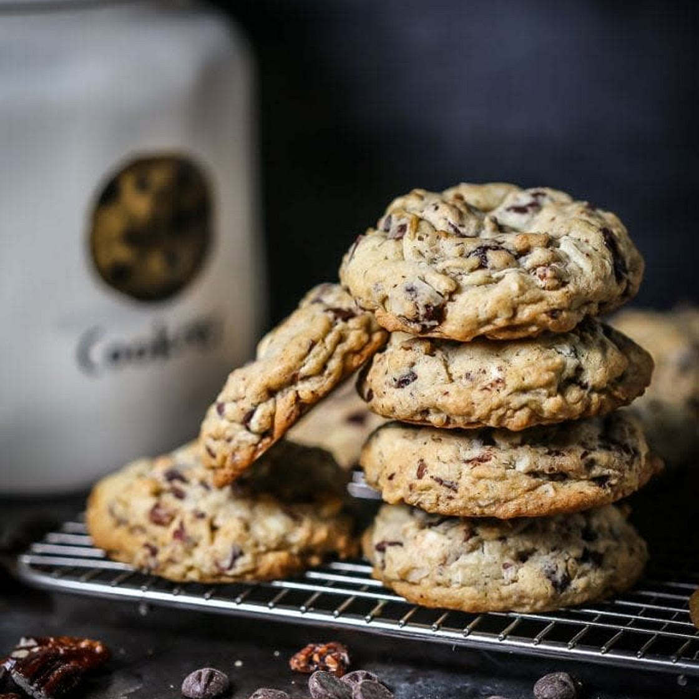

Everything Cookies

Description
This recipe was originally known as "Everything But the Kitchen Sink Cookies" because they contain so many
ingredients. We've been making these in our family since 2009 and have since shortened them to just "Everything
Cookies".
These could be described as a cross between a cookie and trail mix.
This recipe is slightly adapted from Martha Stewart's original recipe which can be found here.
Ingredients
- 1 cup (2 sticks) unsalted butter, softened
- ½ cup granulated sugar
- ½ cup light-brown sugar
- 2 large eggs
- 1 teaspoon pure vanilla extract
- 2 cups all-purpose flour
- 1 teaspoon baking soda
- ½ teaspoon baking powder
- ½ teaspoon salt
- 2 cups old-fashioned rolled oats
- 1 cup sweetened shredded coconut
- 1 cup chopped walnuts or pecans
- 1 cup raisins
- 2 cups semi-sweet chips
- Nonstick cooking spray
Steps
- Preheat the oven to 350°F (175°C).
- Line baking sheets with nonstick baking mats or parchment paper.
- In the bowl of an electric mixer fitted with the paddle attachment, add the softened butter.
- Cream together the butter, granulated sugar, and light-brown sugar until light and fluffy.
- Beat in the eggs, one at a time, mixing well after each addition.
- Stir in the vanilla extract.
- In a separate medium bowl, whisk together the flour, baking soda, baking powder, and salt.
- With the mixer on low speed, gradually add the dry ingredients to the wet ingredients. Mix until well
combined.
- Add the oats, coconut, toffee, chocolate, cherries, pecans, and pretzels.
- Mix on low speed until just combined. Do not overmix.
- Using a 2-inch ice cream scoop, drop dough onto prepared baking sheets, spacing them about 2 inches apart.
- Spray the bottom of a glass with nonstick cooking spray and press down on each dough ball to flatten the
cookies evenly.
- Transfer the baking sheets to the oven and bake for 12 to 14 minutes, or until the cookies are golden brown.
- Remove from the oven and let the cookies cool on the baking sheet for 2 minutes.
- Transfer cookies to a wire rack to cool completely.
Home